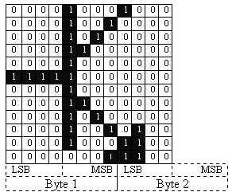
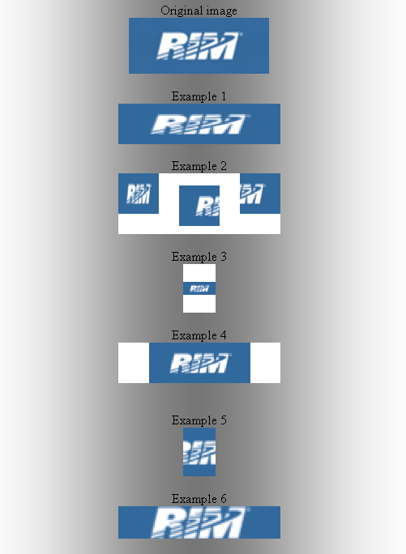
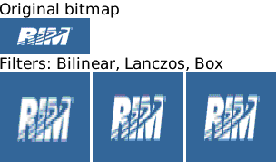
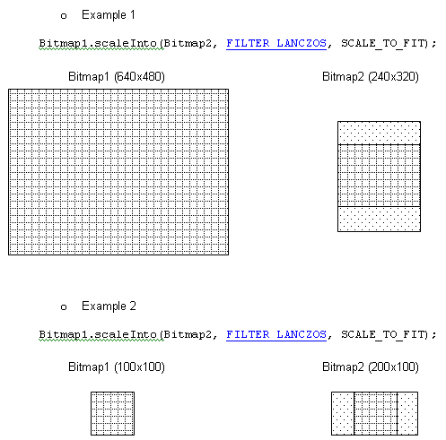
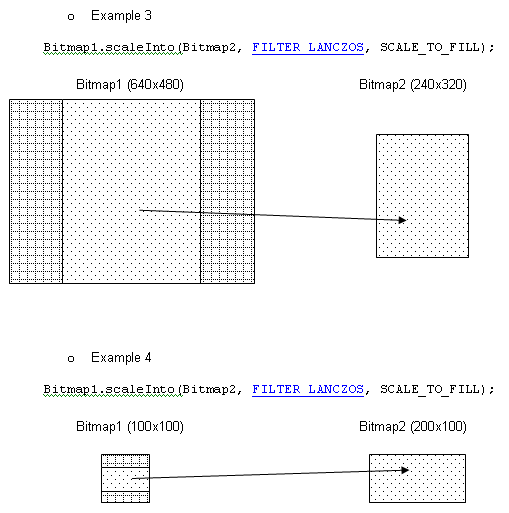
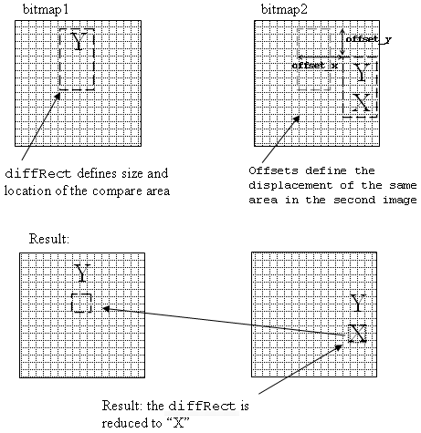

net.rim.device.api.system.Bitmap
net.rim.device.api.system.Bitmap
|
|||||||||
| PREV CLASS NEXT CLASS | FRAMES NO FRAMES | ||||||||
| SUMMARY: NESTED | FIELD | CONSTR | METHOD | DETAIL: FIELD | CONSTR | METHOD | ||||||||
java.lang.Object
public final class Bitmap
Encapsulates a Bitmap graphic that can be displayed on the BlackBerry device.
When constructing a bitmap object, you have the option to specify the type of encoding used.
// Construct a blank bitmap object
Bitmap bm = new Bitmap(Display.getWidth(), Display.getHeight());
// Create a bitmap from provided name resource
Bitmap _marker = Bitmap.getBitmapResource("marker.PNG");
// Retrieve one of the predefined system bitmaps
Bitmap original = Bitmap.getPredefinedBitmap(Bitmap.INFORMATION);
// Create a bitmap from image data
Bitmap image = Bitmap.createBitmapFromBytes( rawBytes, 0, -1, scale );
Use raw image data
To retrieve raw image data from a specified region of a bitmap and store the
data in an integer array, invoke Bitmap.getARGB(). Applications can then
manipulate the raw image data directly.
Initialize an integer array, and then invoke Bitmap.getARGB() to store the raw
image data of the new or predefined bitmap in the integer array.
Bitmap original = Bitmap.getPredefinedBitmap(Bitmap.INFORMATION); int[] argb = new int[original.getWidth() * original.getHeight()]; original.getARGB(argb, 0, original.getWidth(), 0, 0, original.getWidth(), original.getHeight());You can compare two images by invoking
Bitmap.equals() to determine if the two bitmaps are identical. For example:
if(restored.equals(original))
{
//do something
}
Bitmap.PNGInfo| Nested Class Summary | ||
|---|---|---|
static class |
Bitmap.PNGInfo
Provides additional information relevant for PNG bitmap graphics. |
|
| Field Summary | ||
|---|---|---|
static int |
ALPHA_BITDEPTH_8BPP
8-bit Alpha Channel type identifier. |
|
static int |
ALPHA_BITDEPTH_MONO
Deprecated. Use ALPHA_BITDEPTH_8BPP instead. |
|
static int |
COLUMNWISE_MONOCHROME
Deprecated. use a rowwise format and then perform a rotation. |
|
static int |
EXCLAMATION
Predefined bitmap used for alert dialogs. |
|
static int |
FILTER_BILINEAR
Bilinear interpolation filter. |
|
static int |
FILTER_BOX
Box interpolation filter. |
|
static int |
FILTER_LANCZOS
Lanczos interpolation filter. |
|
static int |
HOURGLASS
Predefined bitmap used for busy cursors. |
|
static int |
INFORMATION
Predefined bitmap used for information dialogs. |
|
static int |
QUESTION
Predefined bitmap used for query dialogs. |
|
static int |
ROWWISE_16BIT_COLOR
Deprecated. If possible, use the default type (i.e. don't specify a format when creating a Bitmap); otherwise, use ROWWISE_32BIT_XRGB8888. This format, while still supported, has much lower performance than ROWWISE_32BIT_XRGB8888. |
|
static int |
ROWWISE_32BIT_ARGB8888
Rowwise, color bitmap type. |
|
static int |
ROWWISE_32BIT_ARGB8888PRE
Rowwise, color bitmap type. |
|
static int |
ROWWISE_32BIT_XRGB8888
Rowwise, color bitmap type. |
|
static int |
ROWWISE_MONOCHROME
Deprecated. |
|
static int |
SCALE_STRETCH
This bitmap scaling option marks that scaling should proceed without preserving aspect ratio. |
|
static int |
SCALE_TO_FILL
This bitmap scaling option marks that scaling is done with preserving the aspect ratio. |
|
static int |
SCALE_TO_FIT
This bitmap scaling option marks that scaling is done with preserving the aspect ratio. |
|
static int |
TRUE_BLACK
The hexadecimal representation of pure black. |
|
static int |
TRUE_WHITE
The hexadecimal representation of pure white. |
|
| Constructor Summary | ||
|---|---|---|
Bitmap(int width,
int height)
Constructs a blank bitmap object. |
||
Bitmap(int type,
int width,
int height)
Constructs a blank bitmap object of a specific type. |
||
Bitmap(int type,
int width,
int height,
byte[] data)
Deprecated. Use setRGB565 or setARGB to initialize the Bitmap data. |
||
| Method Summary | ||
|---|---|---|
void |
createAlpha()
Create an 8bpp alpha channel on this Bitmap (if one doesn't already exist). |
|
void |
createAlpha(int bitDepth)
Deprecated. Use createAlpha() instead. |
|
static Bitmap |
createBitmapFromBytes(byte[] bytes,
int offset,
int length,
int scale)
Creates a bitmap from image data. |
|
static Bitmap |
createBitmapFromPNG(byte[] png,
int offset,
int length)
Creates a bitmap from provided PNG format data. |
|
boolean |
equals(Object obj)
Tests if provided bitmap is equal to this bitmap. |
|
void |
getARGB(int[] argbData,
int offset,
int scanLength,
int x,
int y,
int width,
int height)
Gets raw ARGB data from region of this Bitmap and stores it in the provided array. |
|
void |
getARGB(int[] argbData,
int offset,
int scanLength,
int x,
int y,
int width,
int height,
boolean preAlpha)
Gets raw ARGB data from region of this Bitmap and stores it in the provided array. |
|
static Bitmap |
getBitmapResource(String name)
Creates a bitmap from provided name resource. |
|
static Bitmap |
getBitmapResource(String module,
String name)
Creates a bitmap from provided named resource found in module. |
|
int |
getBitsPerPixel()
Get the bits per pixel of the bitmap. |
|
static int |
getDefaultType()
Query the default Bitmap type for the device. |
|
int |
getHeight()
Retrieves this bitmap's height. |
|
static Bitmap |
getPredefinedBitmap(int predefinedBitmap)
Retrieves one of the predefined system bitmaps. |
|
void |
getRGB565(byte[] rgbData,
int offset,
int scanLength,
int x,
int y,
int width,
int height)
Gets RGB 565 data from a region of this Bitmap and stores it in the provided byte array (Big Endian format), i.e. byte[0] = RRRRRGGG, byte[1] = GGGBBBBB. |
|
int |
getType()
Retrieves this bitmap's type. |
|
int |
getWidth()
Retrieves this bitmap's width. |
|
boolean |
hasAlpha()
Tests whether there is an alpha map associated with this Bitmap. |
|
boolean |
isWritable()
Indicates whether the Bitmap object is read-only. |
|
void |
locateDifference(XYRect diffRect,
Bitmap bmp2,
int offset_x,
int offset_y)
Compares this Bitmap to another for differences. |
|
void |
scaleInto(int srcLeft,
int srcTop,
int srcWidth,
int srcHeight,
Bitmap dst,
int dstLeft,
int dstTop,
int dstWidth,
int dstHeight,
int filterType)
Scales the rectangular area in this bitmap and stores the result in the rectangular area in the provided bitmap. |
|
void |
scaleInto(Bitmap dst,
int filterType)
Scales this bitmap and stores the result in the provided bitmap. |
|
void |
scaleInto(Bitmap dst,
int filterType,
int iAspectRatioOption)
Scales this bitmap and stores the result in the provided bitmap with an option to preserve the aspect ratio. |
|
void |
setARGB(int[] data,
int offset,
int scanLength,
int left,
int top,
int width,
int height)
Changes the bitmap to match the data in the provided array. |
|
void |
setRGB565(byte[] rgbData,
int offset,
int scanLength,
int x,
int y,
int width,
int height)
Sets the bitmap color data for a specified rectangular region using the provided raw 16-bit RGB 565 data array. |
|
| Methods inherited from class java.lang.Object |
|---|
getClass, hashCode, notify, notifyAll, toString, wait, wait, wait |
| Field Detail |
|---|
public static final int INFORMATION
public static final int QUESTION
public static final int EXCLAMATION
public static final int HOURGLASS
public static final int ALPHA_BITDEPTH_MONO
Used as an input to createAlpha to create a 1-bit
alpha channel (1 bit opacity per pixel).
public static final int ALPHA_BITDEPTH_8BPP
Used as an input to createAlpha to create an 8-bit
alpha channel (8 bit opacity per pixel).
public static final int COLUMNWISE_MONOCHROME
This bitmap type stores data in pixel wide columns in successive bytes. Each bit in a byte is a pixel value: 0 is white and 1 is black. Uppermost pixels are in the less significant bits within a byte, and lower numbered bytes contain the uppermost pixels within a column.
public static final int ROWWISE_32BIT_ARGB8888
This bitmap type stores data in rows, with 4 bytes per pixel. The first byte represents the alpha value, the second red, the third green, and the fourth blue.
public static final int ROWWISE_32BIT_ARGB8888PRE
This bitmap type stores data in rows, with 4 bytes per pixel, premultiplied by alpha. The first byte represents the alpha value, the second (alpha * red), the third (alpha * green), and the fourth (alpha * blue).
public static final int ROWWISE_32BIT_XRGB8888
This bitmap type stores data in rows, with 4 bytes per pixel. The first byte is ignored, the second byte represents red, the third green, and the fourth blue.
public static final int ROWWISE_16BIT_COLOR
This bitmap type stores data in rows, with 2 bytes per pixel. A 0 is black and a 0xffff (65535) is white. Each row is padded (if necessary) so that each row is a multiple of 4 bytes in width.
public static final int ROWWISE_MONOCHROME
This bitmap type stores data in rows, with 1 bit per pixel. A 0 is black and 1 is white. Each row is a multiple of 4 bytes. Leftmost pixels are in the less significant bits within a byte, and lower numbered bytes contain the leftmost pixels within a row.
public static final int TRUE_WHITE
public static final int TRUE_BLACK
public static final int FILTER_LANCZOS
Lanczos interpolation is considered to give best image quality,
but it is slower then Bitmap.FILTER_BOX and Bitmap.FILTER_BILINEAR.
Lanczos interpolation produces the sharpest images, but may also
introduce some ringing artifacts.
public static final int FILTER_BOX
It may produce blurry images and is considered to have poor visual results. However it has fast computation.
public static final int FILTER_BILINEAR
Bilinear filter produces good results for image reduction and enlargement, but displays sharp transition lines. Very fast computation. This filter is popular in rendering of the previews.
public static final int SCALE_STRETCH
public static final int SCALE_TO_FIT
public static final int SCALE_TO_FILL
| Constructor Detail |
|---|
public Bitmap(int width,
int height)
width - Width of this bitmap.height - Height of this bitmap.
IllegalArgumentException - Thrown if width or height parameters are invalid.
public Bitmap(int type,
int width,
int height)
width - Width of this bitmap.height - Height of this bitmap.type - Type of this bitmap.
IllegalArgumentException - Thrown if the width, height, or
the type is invalid.
public Bitmap(int type,
int width,
int height,
byte[] data)
Note that this method makes a copy of your provided bitmap data.
This method requires that the provided data be consistent with the specified bitmap type and dimensions. This includes any necessary padding to ensure that stride breaks occur on DWORD (4-byte) boundaries.
type - Type of this bitmap.width - Width of this bitmap.height - Height of this bitmap.data - Data from which to build this bitmap.
IllegalArgumentException - Thrown if the length of the data array is
incorrect, the width or height are invalid, or the type is invalid.

// 12x12 transistor symbol
byte[] sourceData = new byte[] {
(byte) 0x10, (byte) 0xF1, (byte) 0xFF, (byte) 0xFF,
(byte) 0x90, (byte) 0xF0, (byte) 0xFF, (byte) 0xFF,
(byte) 0x50, (byte) 0xF0, (byte) 0xFF, (byte) 0xFF,
(byte) 0x30, (byte) 0xF0, (byte) 0xFF, (byte) 0xFF,
(byte) 0x10, (byte) 0xF0, (byte) 0xFF, (byte) 0xFF,
(byte) 0x1F, (byte) 0xF0, (byte) 0xFF, (byte) 0xFF,
(byte) 0x10, (byte) 0xF0, (byte) 0xFF, (byte) 0xFF,
(byte) 0x30, (byte) 0xF0, (byte) 0xFF, (byte) 0xFF,
(byte) 0x50, (byte) 0xF0, (byte) 0xFF, (byte) 0xFF,
(byte) 0x90, (byte) 0xF2, (byte) 0xFF, (byte) 0xFF,
(byte) 0x10, (byte) 0xF3, (byte) 0xFF, (byte) 0xFF,
(byte) 0x80, (byte) 0xF3, (byte) 0xFF, (byte) 0xFF
};
monochromeBitmap = new Bitmap(Bitmap.ROWWISE_MONOCHROME, 12, 12, sourceData);
| Method Detail |
|---|
public static int getDefaultType()
public void getARGB(int[] argbData,
int offset,
int scanLength,
int x,
int y,
int width,
int height,
boolean preAlpha)
argbData - Array of data where the ARGB data will be stored. Each pixel is stored in 0xAARRGGBB format.offset - Offset into the data to start writing to.scanLength - Width of a scanline within the data array.x - Left edge of rectangle to copy from.y - Top edge of the rectangle to copy from.width - Width of the rectangle to copy from.height - Height of the rectangle to copy from.preAlpha - if true multiply the color channels by alpha.
NullPointerException - Thrown if 'argbData' is null.
ArrayIndexOutOfBoundsException - Thrown if the data parameters are invalid.
public void getARGB(int[] argbData,
int offset,
int scanLength,
int x,
int y,
int width,
int height)
argbData - Array of data where the ARGB data will be stored. Each pixel is stored in 0xAARRGGBB format.offset - Offset into the data to start writing to.scanLength - Width of a scanline within the data array.x - Left edge of rectangle to copy from.y - Top edge of the rectangle to copy from.width - Width of the rectangle to copy from.height - Height of the rectangle to copy from.
NullPointerException - Thrown if 'argbData' is null.
ArrayIndexOutOfBoundsException - Thrown if the data parameters are invalid.
public void getRGB565(byte[] rgbData,
int offset,
int scanLength,
int x,
int y,
int width,
int height)
rgbData - Array of data where the 16-bit RGB 565 data will be stored in Big Endian format.offset - Offset into the data to start writing to.scanLength - Width of a scanline (in bytes) within the data array.x - Left edge of rectangle to copy from.y - Top edge of the rectangle to copy from.width - Width of the rectangle to copy from.height - Height of the rectangle to copy from.
NullPointerException - Thrown if 'rgbData' is null.
IllegalArgumentException - Thrown if the data parameters are invalid.
public void setRGB565(byte[] rgbData,
int offset,
int scanLength,
int x,
int y,
int width,
int height)
The RGB565 data is provided in a byte array (Big Endian format), i.e. byte[0] = RRRRRGGG, byte[1] = GGGBBBBB.
For bitmaps of type other than Bitmap.ROWWISE_16BIT_COLOR this method first converts the RGB565 data
to this bitmap's type.
The source data must be sufficient to provide data for the specified destination region. The destination region must be fully contained within the current bitmap.
rgbData - Array of source 16-bit RGB 565 data will be stored in Big Endian format.offset - Starting offset (bytes) for the source data.scanLength - Width of a scanline (in bytes) within the data array.x - Left edge of destination rectangle.y - Top edge of the destination rectangle.width - Width of the destination rectangle.height - Height of the destination rectangle.
NullPointerException - Thrown if 'rgbData' is null.
IllegalArgumentException - Thrown if the data parameters are invalid.public int getBitsPerPixel()
public int getHeight()
public void scaleInto(Bitmap dst,
int filterType)
dst - Destination bitmap.filterType - Interpolation filter type. May be one of:
NullPointerException - Thrown if 'dst' is null.
IllegalArgumentException - Thrown if the destination bitmap is read-only.
IllegalArgumentException - Thrown if illegal filter type is specified.
The following code sample illustrates various ways of scaling bitmaps:
testBitmap0 = Bitmap.getBitmapResource("rim.png");
// Create different scaled versions of the original bitmap
Bitmap scaledBitmap1 = new Bitmap(200, 50);
Bitmap scaledBitmap2 = new Bitmap(200, 75);
Bitmap scaledBitmap3 = new Bitmap(40, 60);
Bitmap scaledBitmap4 = new Bitmap(200, 50);
Bitmap scaledBitmap5 = new Bitmap(40, 60);
Bitmap scaledBitmap6 = new Bitmap(200, 40);
// Example 1. Scale the source bitmap and store it in another bitmap
testBitmap0.scaleInto(scaledBitmap1, Bitmap.FILTER_BILINEAR);
// Example 2. Copy fragments of the original bitmap into fragments of another bitmap
testBitmap0.scaleInto(0, 0, testBitmap0.getWidth(), testBitmap0.getHeight(), scaledBitmap2,
0, 0, 50, 50, Bitmap.FILTER_BILINEAR);
testBitmap0.scaleInto( 0, 0, 50, 50, scaledBitmap2, 75, 15, 50, 50, Bitmap.FILTER_BILINEAR);
testBitmap0.scaleInto(50, 0, 50, 50, scaledBitmap2, 150, 0, 50, 50, Bitmap.FILTER_BILINEAR);
// Example 3. Scale preserving the aspect ratio. Fit horizontally.
testBitmap0.scaleInto(scaledBitmap3, Bitmap.FILTER_BILINEAR, Bitmap.SCALE_TO_FIT);
// Example 4. Scale preserving the aspect ratio. Fit vertically.
testBitmap0.scaleInto(scaledBitmap4, Bitmap.FILTER_BILINEAR, Bitmap.SCALE_TO_FIT);
// Example 5. Scale preserving the aspect ratio. Fill vertically.
testBitmap0.scaleInto(scaledBitmap5, Bitmap.FILTER_BILINEAR, Bitmap.SCALE_TO_FILL);
// Example 6. Scale preserving the aspect ratio. Fill horizontally.
testBitmap0.scaleInto(scaledBitmap6, Bitmap.FILTER_BILINEAR, Bitmap.SCALE_TO_FILL);
This code results in following bitmaps:

Interpolation filters.
The interpolation is required to eliminate blocky appearance of rescaled bitmap due to change in the number of pixels and hence the digital sampling rate. Interpolation resamples digital data removing blocky appearance. There are three filters available for use with bitmap scaling methods:
Bitmap.FILTER_LANCZOS - Lanczos interpolation is considered to give best image quality, but it is the slowest
out the other three interpolation algorithms. Lanczos interpolation produces the sharpest
images, but may also introduce some ringing artifacts.
Bitmap.FILTER_BOX - Box filter (aka mean filter, averaging filter, and smoothing filter) produces blurry
images and is considered to have poor visual results. Very fast computation.
Bitmap.FILTER_BILINEAR - Bilinear filter produces good results for image reduction and enlargement,
but displays sharp transition lines. Very fast computation. This filter is popular
in rendering of the previews.
Visual result of each filter looks different when applied to various types of images. Therefore, it is up to the user to choose suitable interpolation and make speed vs. quality trade off.

public void scaleInto(Bitmap dst,
int filterType,
int iAspectRatioOption)
dst - Destination bitmap.filterType - Interpolation filter type. May be one of:
iAspectRatioOption - - aspect ratio option. May be one of:
Bitmap.SCALE_STRETCH - aspect ratio is not preservedBitmap.SCALE_TO_FIT – preserve aspect ratio and fit the source bitmap to
the destination bitmap Bitmap.SCALE_TO_FILL – preserve aspect ratio and fill the destination
bitmap with the source bitmapNullPointerException - Thrown if 'dst' is null.
IllegalArgumentException - Thrown if the preserveAspectRatio parameter is invalid.
IllegalArgumentException - Thrown if the destination bitmap is read-only.
IllegalArgumentException - Thrown if illegal filter type is specified.
SCALE_TO_FIT – With this option the aspect ratio is preserved. In case the source and the output bitmaps have different aspect ratios the scale is MIN((height_out/height_in), (width_out/width_in)). In other words, it will scale to match the smallest destination dimension (height or width). The source bitmap data is rendered in the center of the output bitmap. The source bitmap is fit to the dimensions of the destination bitmap and a part of destination bitmap remains unchanged.

SCALE_TO_FILL – With this option the aspect ratio is preserved. In case the source and the output bitmaps have different aspect ratios the scale is MAX((height_out/height_in), (width_out/width_in)). In other words, it will scale to match the largest destination dimension (height or width). The source bitmap fills the destination bitmap completely and outstanding parts of the source bitmap are not copied to the destination bitmap.

public void scaleInto(int srcLeft,
int srcTop,
int srcWidth,
int srcHeight,
Bitmap dst,
int dstLeft,
int dstTop,
int dstWidth,
int dstHeight,
int filterType)
srcLeft - X coordinate of the top left corner of the area to be copied from the source bitmap.srcTop - Y coordinate of the top left corner of the area to be copied from the source bitmap.srcWidth - Width of the area to be copied from the source bitmap.srcHeight - Height of the area to be copied from the source bitmap.dst - Destination bitmap that receives scaled copy of the source bitmap.dstLeft - X coordinate of the top left corner of the area to be copied to the destination bitmap.dstTop - Y coordinate of the top left corner of the area to be copied to the destination bitmap.dstWidth - Width of the area to be copied to the destination bitmap.dstHeight - Height of the area to be copied to the destination bitmap.filterType - Interpolation filter type. May be one of:
NullPointerException - Thrown if 'dst' is null.
IllegalArgumentException - Thrown if the destination bitmap is read-only.
IllegalArgumentException - Thrown if illegal filter type is specified.
The interpolation is required to eliminate blocky appearance of rescaled bitmap due to change in the number of pixels and hence the digital sample rate. Interpolation resamples digital data removing blocky appearance.
Lanczos interpolation is considered to give best image quality, but it is the slowest out the other three interpolation algorithms. Lanczos interpolation produces the sharpest images, but may also introduce some ringing artifacts.
Box filter (aka mean filter, averaging filter, and smoothing filter) produces blurry images and is considered to have poor visual results. Very fast computation.
Bilinear filter produces good results for image reduction and enlargement, but displays sharp transition lines. Very fast computation. This filter is popular in rendering of the previews.
Visual result of each filter looks different when applied to various types of images. Therefore, it is up to the user to choose suitable interpolation and make speed vs. quality trade off.
public int getType()
public int getWidth()
public boolean isWritable()
Readonly bitmaps cannot be drawn to by attaching a Graphics object.
public void setARGB(int[] data,
int offset,
int scanLength,
int left,
int top,
int width,
int height)
data - Array of ARGB data that will be used as the new bitmap data. Each pixel is stored in 0xAARRGGBB format.offset - Offset into the data to start writing to.scanLength - Width of a scanline within the data array.left - Start x position in bitmap for ARGB data.top - Start y position in bitmap for ARGB data.width - Width of ARGB data.height - Height of ARGB data.
NullPointerException - if 'data' is null.
IllegalArgumentException - if data/coordinates(top,left,width,height) are invalid or bitmap is read-only
public static Bitmap createBitmapFromPNG(byte[] png,
int offset,
int length)
png - PNG data.offset - Start of PNG data in the passed byte array.length - Length of PNG data in the passed byte array: -1 means to
the end of the data array.
OutOfMemoryError - Thrown if insufficient memory to process the PNG data
into a bitmap.
NullPointerException - Thrown if the png parameter is null.
IllegalArgumentException - Thrown if the png parameter is invalid, or
offset or length are invalid.
public static Bitmap createBitmapFromBytes(byte[] bytes,
int offset,
int length,
int scale)
The image can be optionally downscaled during decoding by an integer scale factor.
bytes - Image data.offset - Start of image data in the passed byte array.length - Length of image data in the passed byte array: -1 means to
the end of the data array.scale - Integer downscale factor: 1 means no scaling.
OutOfMemoryError - If insufficient memory to process the image data
into a bitmap.
NullPointerException - If the bytes parameter is null.
IllegalArgumentException - If the bytes parameter is invalid,
offset or length are invalid.
ArithmeticException - is scale is 0.public boolean equals(Object obj)
A bitmap is equal to another if the types are the same, the dimensions are the same, and the data is the same.
equals in class Objectobj - The object to compare to this bitmap.
Boolean.hashCode(),
Hashtable
public void locateDifference(XYRect diffRect,
Bitmap bmp2,
int offset_x,
int offset_y)
XYRect
and can be offset within the second bitmap to an alternate position.
This method finds the minimal difference between the bitmaps in the defined area.
The provided XYRect is modified with the new coordinates representing this area.
An empty XYRect represents no difference between the two bitmaps within the given area.
Example: bitmap1.locateDifference(diffRect, bitmap2, offset_x, offset_y);

diffRect - an XYRect that defines the area within this Bitmap to compare to the second bitmapbmp2 - the second bitmap to compare regions ofoffset_x - the x offset to the XYRect diffRect within bmp2offset_y - the y offset to the XYRect diffRect within bmp2
NullPointerException - Thrown if diffRect or bmp2 is null.
IllegalArgumentException - Thrown if bitmap height or width is zero.
IllegalArgumentException - Thrown if diffRect height or width is zero.
IllegalArgumentException - Thrown if the diffRect is out of this bitmap bounds.
IllegalArgumentException - Thrown if the diffRect that was offset by values
offset_x and offset_y is out of bmp2 bitmap bounds.public boolean hasAlpha()
public void createAlpha()
public void createAlpha(int bitDepth)
Alpha maps can only be set for Bitmaps of type Bitmap.ROWWISE_16BIT_COLOR.
bitDepth - Ignored.
IllegalStateException - If this Bitmap is not of type Bitmap.ROWWISE_16BIT_COLOR.
public static Bitmap getBitmapResource(String module,
String name)
This method looks for the resource in both the .cod file that called this method and any .cod files that it relies on. The resource files are automatically generated by the compiler when a new graphic (PNG, GIF, or, JPG) is added to a project.
module - Name of the module containing the bitmap resource. If
not specified, the name of the calling module is used.name - Name of the bitmap resource.
NullPointerException - If the name parameter is null.public static Bitmap getBitmapResource(String name)
This method looks for the resource in both the .cod file that called this method and any .cod files that it relies on. The resource files are automatically generated by the compiler when a new graphic (PNG, GIF, or, JPG) is added to a project.
name - Name of the bitmap resource.
NullPointerException - If the name parameter is null.public static Bitmap getPredefinedBitmap(int predefinedBitmap)
predefinedBitmap - System graphic to retrieve. If you specify a
value not currently assigned to a standard system bitmap, this method
returns the Bitmap.INFORMATION bitmap.
|
|||||||||
| PREV CLASS NEXT CLASS | FRAMES NO FRAMES | ||||||||
| SUMMARY: NESTED | FIELD | CONSTR | METHOD | DETAIL: FIELD | CONSTR | METHOD | ||||||||
Copyright 1999-2011 Research In Motion Limited. 295 Phillip Street, Waterloo, Ontario, Canada, N2L 3W8. All Rights Reserved.
Java is a trademark of Oracle America Inc. in the US and other countries.
Legal